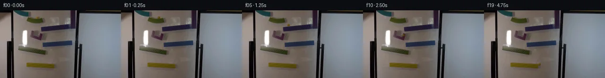
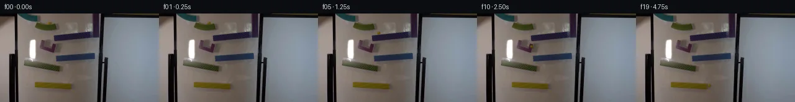
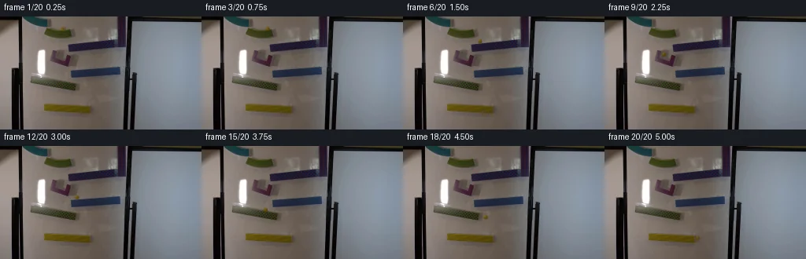
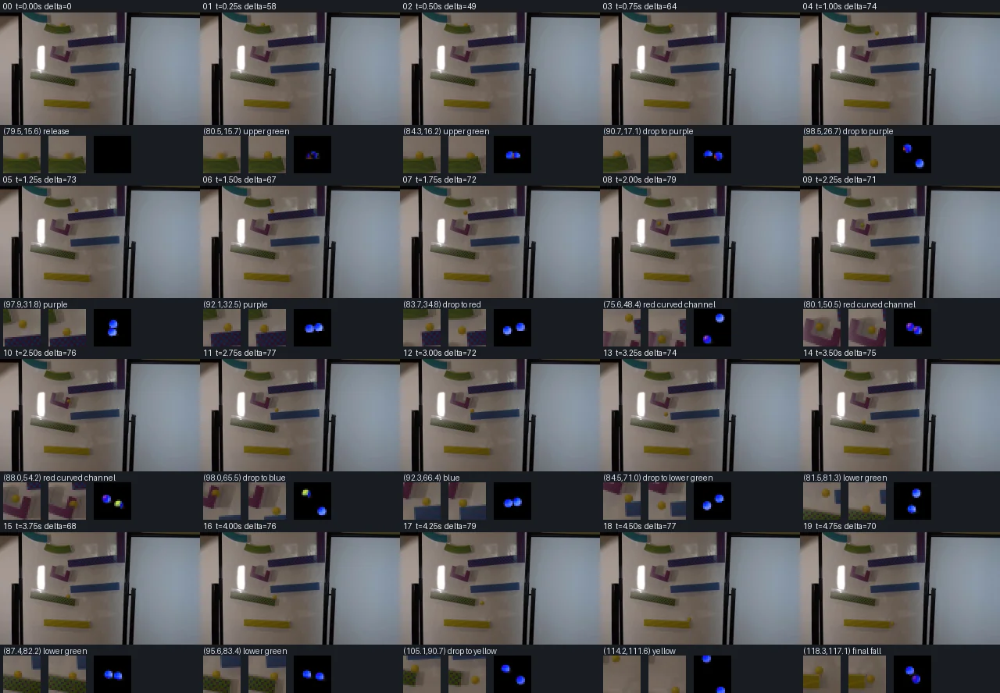

V0 · 初版
2026-11-05T10:48:00.067824+00:00 · RGB 4f03d80f36f2
![]()
Observable Generation Trace
把最终像素视频、Harness 冻结的每轮候选、真实工具事件和 Agent 自述放在同一页。可观测证据与模型自述分开标记，避免把“模型说它检查过”误当成真实工具调用。
![首帧]()
Static locked-off single-shot with fixed frame throughout filmed with constant framerate in real-time. The scene shows a realistic scientific demonstration. The scene only contains the described setup and actions. The magnetic ramps are attached to a whiteboard for a game of marble run. The yellow glass marble is released at the top of the ramps and then slides down the magnetic ramps.
首帧显示在左侧播放器初始画面。Track 权限、隔离和 tensor 一致性来自 run manifest，而不是 METHOD.md。
默认勾选初版和最终版；可选其他版本一起同步播放。仅检查图更新的连续重复快照已合并，回退旧视频仍保留为一次修订。
Observable events
来源：events.jsonl + run manifest
此 Track 禁止读取输出图片。逐轮预览由外部 Harness 自动冻结，只用于事后审计，生成 Agent 当时看不到这些页面。
Frozen candidates
每张图来自该 round 的真实 00 / 01 / 05 / 10 / 19 帧

pixels aebd5acc47576dff · code 7fae8dcba6cb1dff
--- previous/generate.py
+++ current/generate.py
@@ -0,0 +1,305 @@
+"""Local photographic continuation using RGB inpainting and analytic marble motion.
+
+No network, model, reference image, rendering engine, or image viewer is used.
+"""
+from pathlib import Path
+import json
+import math
+import numpy as np
+from PIL import Image, ImageDraw
+from artifact_io import save
+
+ROOT = Path(__file__).resolve().parent
+SOURCE = np.asarray(Image.open(ROOT / 'first_frame.png').convert('RGB'), dtype=np.uint8)
+HEIGHT, WIDTH = SOURCE.shape[:2]
+GRAVITY = 260.0 # apparent image-plane acceleration, pixels / second squared
+RADIUS = 2.65
+
+
+def reconstruct_background():
+ """Replace the single ball footprint using adjacent same-row RGB samples."""
+ clean = SOURCE.astype(np.float64).copy()
+ # y=18 and below are the original green rail, not the yellow sphere.
+ # The smooth feather also removes the weak amber blur above/around the ball.
+ for y in range(12, 18):
+ left_x, right_x = (74, 85) if y >= 16 else (74, 86)
+ left, right = SOURCE[y, left_x].astype(float), SOURCE[y, right_x].astype(float)
+ for x in range(75, 85):
+ u = (x - left_x) / (right_x - left_x)
+ reconstructed = left * (1 - u) + right * u
+ feather = min(1.0, max(0.0, (x - 74) / 1.0), max(0.0, (85 - x) / 1.0))
+ if y == 12:
+ feather *= .35
+ clean[y, x] = clean[y, x] * (1 - feather) + reconstructed * feather
+ return np.clip(np.rint(clean), 0, 255).astype(np.uint8)
+
+
+# Rail contact lines locate the center of the sphere, above each rail surface.
+# Ramps are kept entirely photographic. A contact interval accelerates along
+# its descending direction; landing dissipates and redirects horizontal motion.
+segments = []
+
+def contact(name, t0, x0, y0, xend, speed0, acceleration, slope):
+ direction = 1 if xend > x0 else -1
+ distance = abs(xend - x0)
+ duration = (math.sqrt(speed0 ** 2 + 2 * acceleration * distance) - speed0) / acceleration
+ segment = dict(kind='contact', name=name, t0=t0, t1=t0+duration,
+ x0=x0, y0=y0, vx=direction*speed0,
+ ax=direction*acceleration, slope=slope, xend=xend)
+ segments.append(segment)
+ return segment
+
+
+def end_state(segment):
+ dt = segment['t1'] - segment['t0']
+ x = segment['x0'] + segment['vx'] * dt + .5 * segment.get('ax', 0) * dt * dt
+ if segment['kind'] == 'contact':
+ y = segment['y0'] + segment['slope'] * (x - segment['x0'])
+ vx = segment['vx'] + segment['ax'] * dt
+ vy = segment['slope'] * vx
+ else:
+ y = segment['y0'] + segment['vy'] * dt + .5 * GRAVITY * dt * dt
+ vx = segment['vx']
+ vy = segment['vy'] + GRAVITY * dt
+ return x, y, vx, vy
+
+
+def flight(previous, name, intercept, slope):
+ x, y, vx, vy = end_state(previous)
+ # Solve the exact intersection with the next center/contact line y=b+m*x.
+ coefficient = vy - slope * vx
+ constant = y - intercept - slope * x
+ duration = (-coefficient + math.sqrt(coefficient**2 - 2*GRAVITY*constant)) / GRAVITY
+ segment = dict(kind='flight', name=name, t0=previous['t1'],
+ t1=previous['t1']+duration, x0=x, y0=y, vx=vx, vy=vy)
+ segments.append(segment)
+ return segment
+
+
+top = contact('upper green', .08, 79.5, 15.6, 90.5, 0, 44, .13)
+fall1 = flight(top, 'drop to purple', 33.2 + .13*87, -.13)
+x, y, _, _ = end_state(fall1)
+purple = contact('purple', fall1['t1'], x, y, 87, 9, 45, -.13)
+fall2 = flight(purple, 'drop to red', 48.6 - .47*76, .47)
+x, y, _, _ = end_state(fall2)
+red = contact('red curved channel', fall2['t1'], x, y, 89, 10, 55, .47)
+fall3 = flight(red, 'drop to blue', 66.6 + .085*90, -.085)
+x, y, _, _ = end_state(fall3)
… diff truncated; 218 more lines …
pixels f4c35f63c5a9595a · code 4014d91f8a312034
--- previous/generate.py
+++ current/generate.py
@@ -76,7 +76,9 @@
return segment
-top = contact('upper green', .08, 79.5, 15.6, 90.5, 0, 44, .13)
+RELEASE_DELAY = .035
+
+top = contact('upper green', RELEASE_DELAY, 79.5, 15.6, 90.5, 0, 44, .13)
fall1 = flight(top, 'drop to purple', 33.2 + .13*87, -.13)
x, y, _, _ = end_state(fall1)
purple = contact('purple', fall1['t1'], x, y, 87, 9, 45, -.13)
@@ -99,7 +101,7 @@
def state_at(t):
- if t < .08:
+ if t < RELEASE_DELAY:
return 79.5, 15.6, 0., 0., 'release', 'contact'
for s in segments:
if t <= s['t1'] + 1e-12:
@@ -148,7 +150,7 @@
5+12*diffuse+7*fresnel], axis=-1)
# Weak transmission uses the actual destination RGB rather than a flat fill.
transmitted = base * np.array([1.03, .85, .27])
- color = .79*amber + .21*transmitted
+ color = .79*amber + .21*transmitted + np.array([8., 8., 3.])
highlight = np.exp(-((dx+.37)**2/(.20**2)+(dy+.47)**2/(.16**2)))
color += highlight[..., None]*np.array([21, 19, 12])
lower_caustic = np.exp(-((dx-.16)**2/.16+(dy-.61)**2/.04))pixels f4c35f63c5a9595a · code 4014d91f8a312034
No generate.py text change in this frozen round.
pixels f4c35f63c5a9595a · code 87ebe6aec298aa61
--- previous/generate.py
+++ current/generate.py
@@ -3,6 +3,7 @@
No network, model, reference image, rendering engine, or image viewer is used.
"""
from pathlib import Path
+import base64
import json
import math
import numpy as np
@@ -218,7 +219,9 @@
assert np.array_equal(np.asarray(Image.open(ROOT/'frames/00.png').convert('RGB')), SOURCE)
changed_counts, boxes = [], []
for i in range(20):
- png = np.asarray(Image.open(ROOT/'frames'/f'{i:02}.png').convert('RGB'))
+ with Image.open(ROOT/'frames'/f'{i:02}.png') as image_file:
+ assert image_file.mode == 'RGB' and image_file.size == (256, 144)
+ png = np.asarray(image_file).copy()
packed = (png[...,0].astype(np.uint32)<<16) | (png[...,1].astype(np.uint32)<<8) | png[...,2].astype(np.uint32)
assert np.array_equal(packed, tensor[:,:,i]), i
change = np.any(png != SOURCE, axis=-1)
@@ -242,9 +245,31 @@
assert abs(first['t1']-second['t0']) < 1e-9
joins.append(dict(time=first['t1'],position_jump=jump,
from_phase=first['name'],to_phase=second['name']))
+ # Independently reconstruct the browser's delta packets and compare them
+ # with every saved tensor slice, without opening an image or a browser.
+ player_text = (ROOT/'index.html').read_text()
+ player_data = json.loads(player_text.split('const DATA=', 1)[1].split(';\nfunction unpack', 1)[0])
+ unpack = lambda encoded: np.frombuffer(base64.b64decode(encoded), dtype='<u4')
+ player_frame = unpack(player_data['first']).copy()
+ assert np.array_equal(player_frame.reshape(144, 256), tensor[:, :, 0])
+ for i, encoded in enumerate(player_data['deltas'], 1):
+ packet = unpack(encoded)
+ k = 0
+ while k < len(packet):
+ start, count = int(packet[k]), int(packet[k+1])
+ k += 2
+ player_frame[start:start+count] = packet[k:k+count]
+ k += count
+ assert np.array_equal(player_frame.reshape(144, 256), tensor[:, :, i]), i
+ assert len(player_data['deltas']) == 19
+ phases = {state_at(i/4)[4] for i in range(20)}
+ assert all(name in phases for name in ('upper green', 'purple', 'red curved channel',
+ 'blue', 'lower green', 'yellow'))
report = dict(frame_count=20, width=WIDTH, height=HEIGHT, fps=4, duration_seconds=5,
tensor_shape=list(tensor.shape), tensor_dtype=str(tensor.dtype),
frame00_equals_input=True, png_tensor_matches=20,
+ standalone_player_tensor_matches=20,
+ all_six_ramps_sampled_in_output=True,
static_scene_preserved=True, image_view_tools_used=False,
changed_pixels_relative_to_input=changed_counts,
changed_pixel_boxes=boxes, continuous_position_joins=joins,
@@ -289,7 +314,7 @@
- `index.html` is the supplied standalone player populated with the exact packed frames, playing at 4 fps.
- `verification.json` records numeric results and the full trajectory.
-Verification passed: exact first-frame equality; all 20 PNGs equal their uint32 tensor slices; valid shape/dtype and 24-bit values; photographic pixels outside the cleanup/marble regions unchanged; and zero position jumps at all contact/flight joins. No visual verification was performed.
+Verification passed: exact first-frame equality; all 20 RGB PNGs equal their uint32 tensor slices; valid shape/dtype and 24-bit values; all 20 browser delta reconstructions equal the tensor; photographic pixels outside the cleanup/marble regions unchanged; zero position jumps at all contact/flight joins; and at least one sampled contact frame on every ramp. No visual verification was performed.
'''
(ROOT/'METHOD.md').write_text(text)
Final visual checks
Harness 保存的最终产物


Agent claims
以下文字由生成 Agent 撰写，不等同于工具证据
The input was inspected only with local Python/Pillow/NumPy RGB values, RGB threshold components, and text tables of pixel classes. No image Read/View tool was used. Coordinates below are in the supplied 256 × 144 image, with x increasing right and y increasing down.
The constant sample interval is 0.25 seconds. Frame 00 is the unmodified input. This is a provisional event plan; continuous contact/flight calculations may adjust the listed approximate coordinates to keep transfers consistent.
| Frame | Time (s) | Approximate center | Event |
|---|---|---|---|
| 00 | 0.00 | (79.5,15.6) | Original first frame, beginning release |
| 01 | 0.25 | (80,16) | Starts sliding on upper green ramp |
| 02 | 0.50 | (82,16) | Accelerates to the right |
| 03 | 0.75 | (86,17) | Approaches green exit |
| 04 | 1.00 | (92,22) | Short gravitational drop |
| 05 | 1.25 | (97,32) | Lands on purple ramp, redirected left |
| 06 | 1.50 | (94,33) | Slides left on purple |
| 07 | 1.75 | (89,34) | Reaches purple exit |
| 08 | 2.00 | (83,39) | Falls left toward red channel |
| 09 | 2.25 | (78,50) | Settles into curved red transfer |
| 10 | 2.50 | (81,52) | Slides right through red channel |
| 11 | 2.75 | (89,56) | Leaves red ramp |
| 12 | 3.00 | (97,66) | Lands on blue ramp |
| 13 | 3.25 | (91,67) | Slides left off blue end |
| 14 | 3.50 | (83,77) | Drops to lower green |
| 15 | 3.75 | (86,82) | Slides right on lower green |
| 16 | 4.00 | (97,84) | Leaves lower green end |
| 17 | 4.25 | (109,101) | Falls toward yellow ramp |
| 18 | 4.50 | (118,114) | Leaves yellow ramp after a brief contact |
| 19 | 4.75 | (130,136) | Continues falling below ramps |
Reconstruct only the original marble footprint from adjacent board/ramp pixels, preserving the rest of the photograph exactly. Render a small antialiased amber sphere with numerical glass-like transmission, shading, highlight, and a subtle local shadow. Use continuous accelerated contact segments and ballistic flights, with dissipative changes of direction on landing; composite ramp front-lip pixels over the lower marble where appropriate. Save the required packed pixel tensor, PNG frames, contact sheet, transition check, and standalone player. Check first-frame equality, tensor layout/dtype, PNG-to-tensor equality, static-scene preservation, and numerical trajectory continuity. Do not claim visual review.
After generation, the release delay was adjusted to 0.035 s so that frame 18 visibly represents yellow-ramp contact in the saved pixels. The final frame centers below supersede the provisional coordinates above; the route is unchanged. This revision was checked numerically only.
| Frame | Time (s) | Center (px) | Phase |
|---|---|---|---|
| 00 | 0.00 | (79.50, 15.60) | release |
| 01 | 0.25 | (80.52, 15.73) | upper green |
| 02 | 0.50 | (84.26, 16.22) | upper green |
| 03 | 0.75 | (90.75, 17.07) | drop to purple |
| 04 | 1.00 | (98.52, 26.72) | drop to purple |
| 05 | 1.25 | (97.87, 31.79) | purple |
| 06 | 1.50 | (92.08, 32.54) | purple |
| 07 | 1.75 | (83.67, 34.76) | drop to red |
| 08 | 2.00 | (75.60, 48.41) | red curved channel |
| 09 | 2.25 | (80.09, 50.52) | red curved channel |
| 10 | 2.50 | (88.01, 54.24) | red curved channel |
| 11 | 2.75 | (97.98, 65.50) | drop to blue |
| 12 | 3.00 | (92.34, 66.40) | blue |
| 13 | 3.25 | (84.49, 70.95) | drop to lower green |
| 14 | 3.50 | (81.47, 81.32) | lower green |
| 15 | 3.75 | (87.43, 82.21) | lower green |
| 16 | 4.00 | (95.59, 83.44) | lower green |
| 17 | 4.25 | (105.14, 90.74) | drop to yellow |
| 18 | 4.50 | (114.24, 111.61) | yellow |
| 19 | 4.75 | (118.28, 117.12) | final fall |
This is a local, pixel-based continuation of the supplied photograph. The source was inspected using numeric RGB samples, threshold components, and text tables only. No image Read/View tool was used, and no visual review is claimed. No network, external image, model, engine, or subagent was used.
The camera, whiteboard, colored magnetic ramps, background, and reflection remain fixed. Frame 00 is an exact RGB copy of first_frame.png. For subsequent frames, a 10 × 6 pixel region covering the original amber marble is reconstructed by horizontal interpolation of adjacent RGB values. All other changes are confined to small moving-marble crops; the original photograph supplies every remaining pixel.
The marble follows an authored continuous sequence of accelerated sliding intervals and gravitational flights. Each flight's endpoint is solved as its intersection with the next measured ramp line. Position and time remain continuous at every join. Contact velocities are dissipated and redirected toward each ramp's descending exit to approximate transfer on the small magnetic channels. Apparent gravity is 260 px/s²; this is an image-plane kinematic approximation, not a calibrated three-dimensional rigid-body simulation. The source does not determine depth, friction, or precise collision response.
A radius-2.65-pixel amber sphere is rendered by local NumPy calculations at 6 × supersampling. Analytic sphere normals control diffuse illumination, a subdued glint, rim darkening, a small lower caustic, and weak transmission of destination RGB. A narrow local shadow and preservation of photographed front-lip pixels integrate the sphere with the ramps. Three shutter samples across 1/90 second give slight motion softness. The amber exposure is chosen from the initial marble's muted RGB measurements.
The final computed route passes through all six colored ramps. The final frame shows the marble beginning its fall below the yellow exit; no catching container or new object was invented.
| Frame | Time (s) | Marble center (px) | Phase |
|---|---|---|---|
| 00 | 0.00 | (79.50, 15.60) | release |
| 01 | 0.25 | (80.52, 15.73) | upper green |
| 02 | 0.50 | (84.26, 16.22) | upper green |
| 03 | 0.75 | (90.75, 17.07) | drop to purple |
| 04 | 1.00 | (98.52, 26.72) | drop to purple |
| 05 | 1.25 | (97.87, 31.79) | purple |
| 06 | 1.50 | (92.08, 32.54) | purple |
| 07 | 1.75 | (83.67, 34.76) | drop to red |
| 08 | 2.00 | (75.60, 48.41) | red curved channel |
| 09 | 2.25 | (80.09, 50.52) | red curved channel |
| 10 | 2.50 | (88.01, 54.24) | red curved channel |
| 11 | 2.75 | (97.98, 65.50) | drop to blue |
| 12 | 3.00 | (92.34, 66.40) | blue |
| 13 | 3.25 | (84.49, 70.95) | drop to lower green |
| 14 | 3.50 | (81.47, 81.32) | lower green |
| 15 | 3.75 | (87.43, 82.21) | lower green |
| 16 | 4.00 | (95.59, 83.44) | lower green |
| 17 | 4.25 | (105.14, 90.74) | drop to yellow |
| 18 | 4.50 | (114.24, 111.61) | yellow |
| 19 | 4.75 | (118.28, 117.12) | final fall |
generate.py regenerates all outputs from the workspace input.pixels.npz contains pixels, a uint32 tensor of shape (144,256,20), with values packed as 0xRRGGBB.frames/00.png through frames/19.png contain 20 RGB images at 256 × 144.inspection.png is the overview contact sheet generated by the supplied output helper.transition_check.png includes all frames, transition pixel counts, paired local crops, and RGB difference crops.index.html is the supplied standalone player populated with the exact packed frames, playing at 4 fps.verification.json records numeric results and the full trajectory.Verification passed: exact first-frame equality; all 20 RGB PNGs equal their uint32 tensor slices; valid shape/dtype and 24-bit values; all 20 browser delta reconstructions equal the tensor; photographic pixels outside the cleanup/marble regions unchanged; zero position jumps at all contact/flight joins; and at least one sampled contact frame on every ramp. No visual verification was performed.